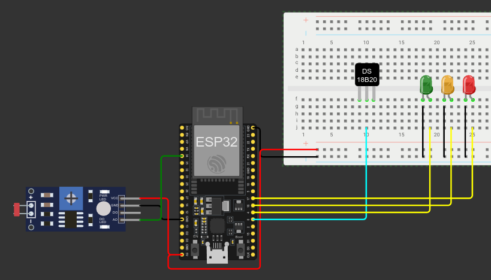

Projeto: IoT - Sistema de Monitoramento de Vacinas
Descrição:
Este projeto simula um sistema de monitoramento de vacinas em refrigeração, desenvolvido como parte da disciplina Fundamentos de Sistemas Ciberfísicos. Utilizando um ESP32, LDR, DS18B20, half bread board e três LEDs nas cores Verde, Amarelo e Vermelho.
O sistema monitora as condições de armazenamento das vacinas e envia os dados para nuvem para serem acessados por celular. Toda a programação foi realizada em MicroPython no simulador Wokwi.
Características principais:
- Monitoramento contínuo da temperatura
- Indicação visual de status com LEDs de diferentes cores
- Integração com sensores de luz e temperatura
- Transmissão de dados para nuvem
Desafios enfrentados:
- Integração dos diferentes componentes de hardware
- Programação em MicroPython
Ferramentas utilizadas:
- ESP32
- LDR
- DS18B20
- MicroPython
- Wokwi
- Aplicativo MyMQTT